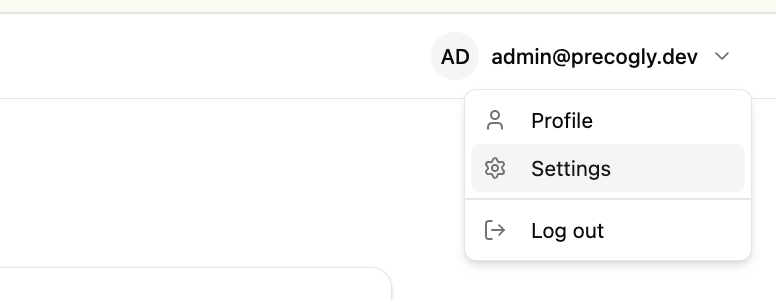
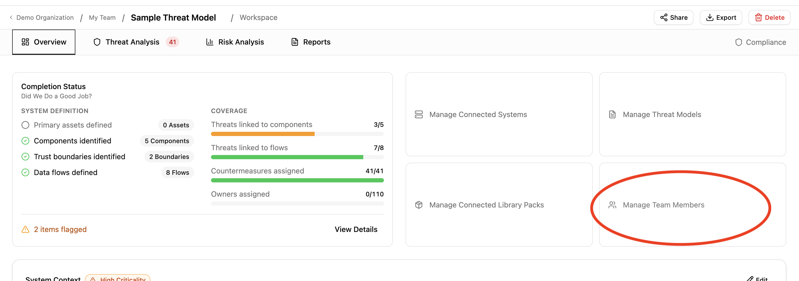
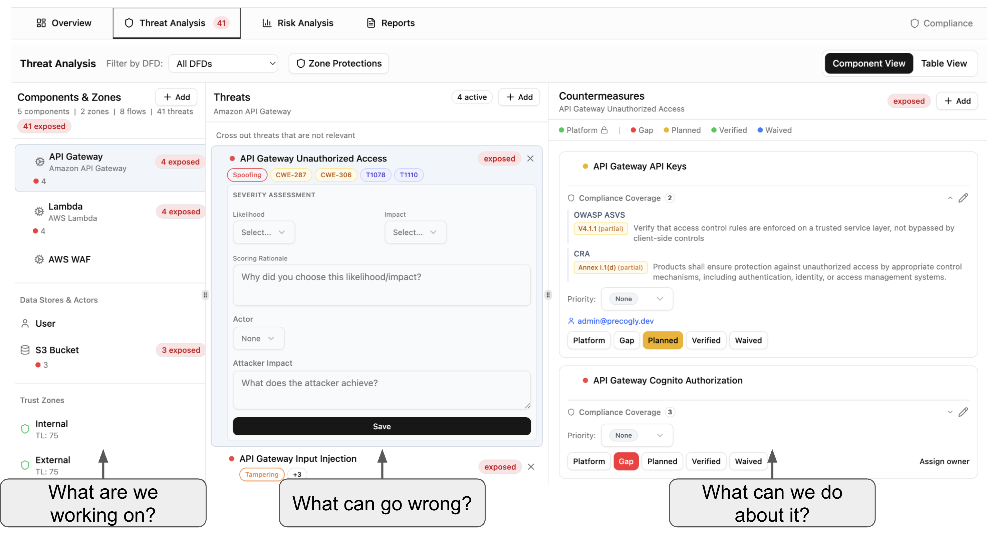
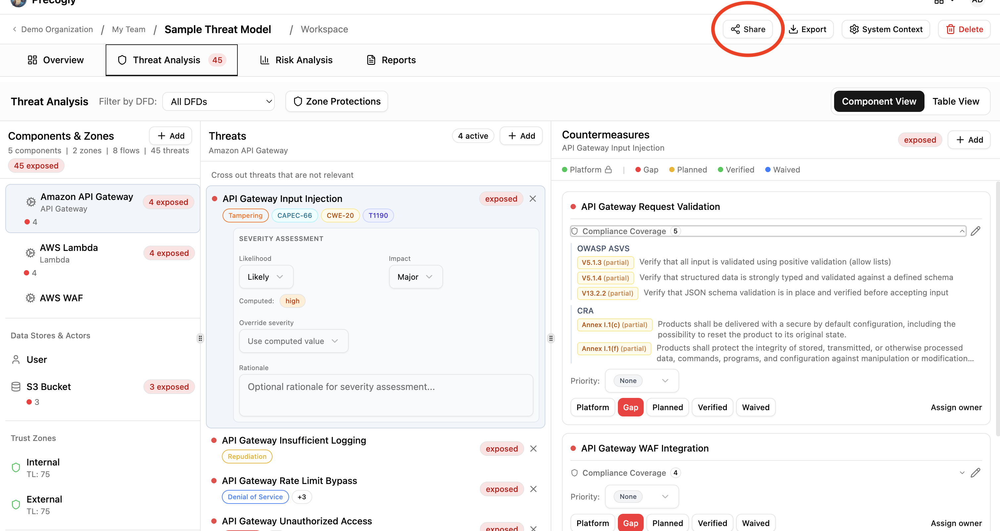
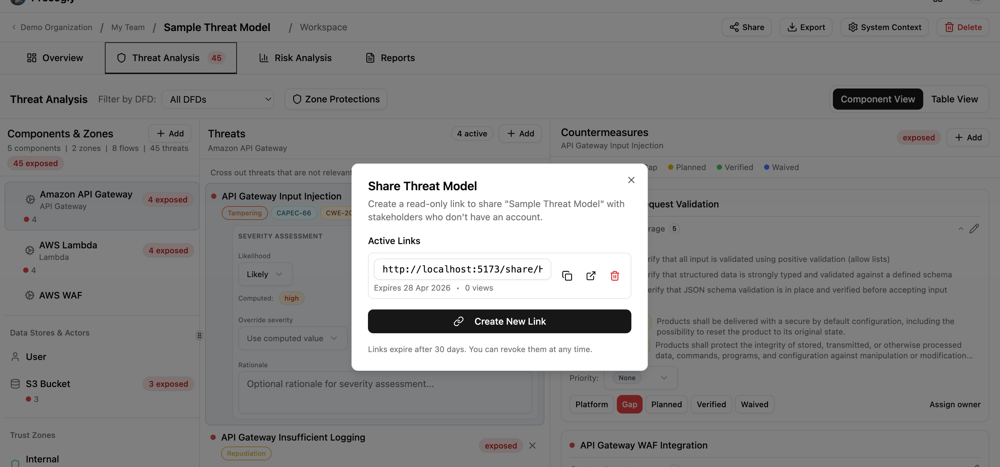
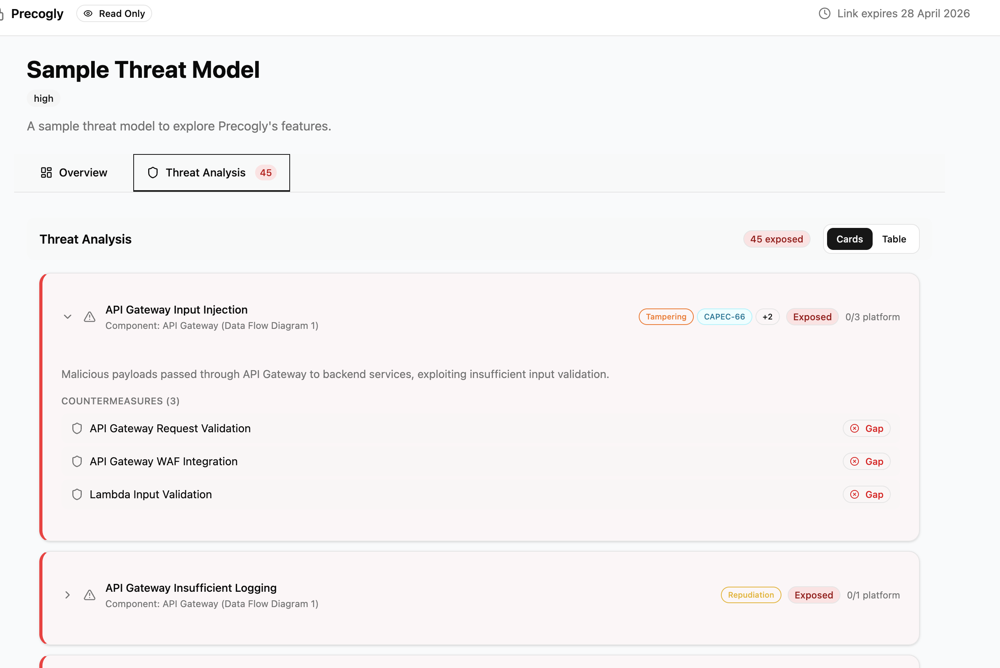
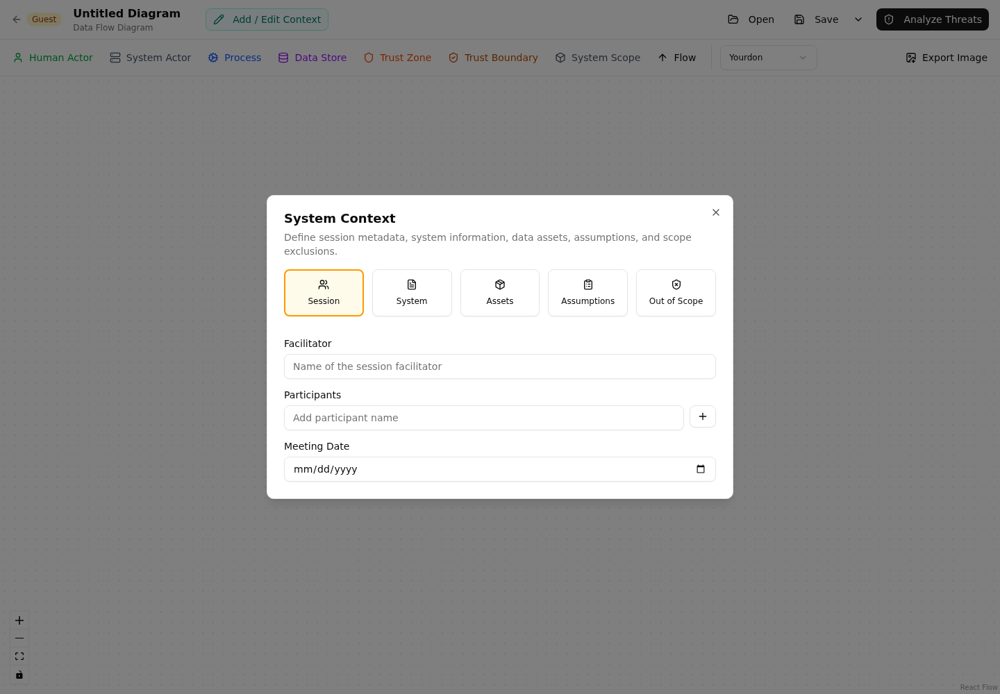
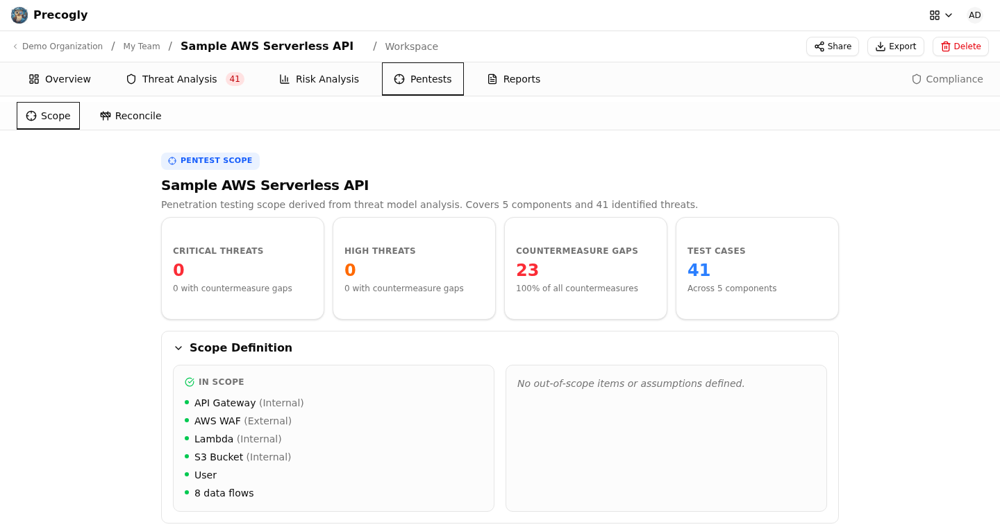
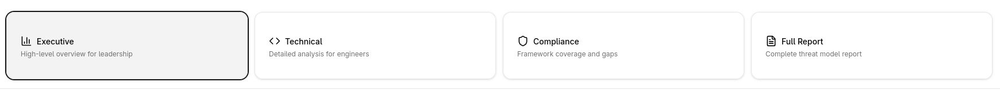

Collaborative Review and Handoff¶
Threat models become useful evidence when the people who build the architecture, review the threats, implement controls, and approve the residual risk can work from the same source of truth. This guide describes a practical review and handoff process in Precogly.
Decide who needs access¶
Precogly uses organization and team roles. The organization Security Team role manages organization-wide security administration. Team roles determine access to a team's models:
| Role | Typical responsibility |
|---|---|
| Lead | Owns the team workflow and manages team membership. |
| Member | Builds and edits the team's threat models. |
| Viewer | Reviews the team's models without editing them. |
| Security Team | Administers security work across the organization. |

Give people the least access they need for their part of the review. A model can be visible to several contributors through team membership, while a viewer can review the architecture and findings without changing the assessment.
When inviting a collaborator, select the team and role deliberately. Confirm the member appears in the intended team before sharing a model for review.

Use a review sequence¶
For a normal architecture review, use three passes rather than asking every reviewer to inspect everything at once.
Architecture pass¶
The system owner and architect verify:
- The model name identifies the system, release, and environment.
- Context and scope describe the system being reviewed.
- Components represent meaningful processing, storage, and actor boundaries.
- Data flows have clear labels, direction, and protection properties.
- Trust zones reflect changes in trust level or administrative control.
- Sensitive data assets are placed on every relevant component and flow.
The primary DFD is the analysis source of truth. Use secondary DFDs for alternate views or reference material, but do not assume that a secondary diagram feeds threat analysis.
Security pass¶
Security reviewers inspect the generated or library-provided threats and confirm:
- Threats are applicable to the component or flow where they appear.
- Severity and threat-actor context reflect the actual environment.
- Dismissed threats have a reason that another reviewer can understand.
- Countermeasures are relevant to the specific threat and location.
- Owners, priorities, due dates, tickets, and evidence are current.
- Shared controls are reviewed at every threat they mitigate.

Decision pass¶
Risk owners and approvers review:
- The business impact of important threats.
- Inherent and residual risk scores.
- Whether each risk is accepted, mitigated, transferred, or awaiting a decision.
- The owner and due date for open actions.
- Assumptions, exclusions, and any compensating controls.
Record decisions in the model while the evidence and architecture context are available. Avoid keeping the final decision only in chat or a separate spreadsheet.
Review changes safely¶
Before making a large review change, export a structured copy of the model. TM-Library JSON is useful for Precogly-to-Precogly backups and version control; CycloneDX 2.0 is useful when another tool or BOM workflow consumes the model. Keep the export associated with the release or review date.
When a reviewer changes a DFD, threat, or control, save the model and allow the workspace to refresh before starting another major edit. After a review session, check the report and the model overview so that the saved state—not only the current browser view—contains the decision.
Share a read-only review¶
From the threat model detail page, choose Share to open the magic-link dialog.

Magic links provide a read-only view without requiring the recipient to create an account. The recipient can review the overview, diagrams, threats, countermeasures, compliance context, and other data included in the shared model.

Treat a magic-link URL like a password. Anyone who has it can view the model, so share it only through an approved channel and revoke it when the review window closes. Do not put secrets, credentials, or unredacted production data in a model intended for broad sharing.

Use authenticated team access when reviewers need to edit the model or when the model is too sensitive for a public link.
Use the guest editor for early collaboration¶
The guest editor supports a local, account-free workflow. It is useful for workshops, initial architecture capture, and contributors who should not yet receive workspace access.

Guest work is local to the browser until the user saves or exports it. Before closing the browser or replacing a guest file, save the current model. A guest model should be reviewed and imported into the signed-in workspace before it becomes the team's authoritative record.
During handoff, compare the imported model with the original guest view:
- Confirm the DFD nodes, flows, and trust zones are present.
- Confirm threats and countermeasures are attached to the intended targets.
- Review imported statuses and warnings.
- Recheck owners, compliance mappings, risks, and assumptions.
Guest editing is not a replacement for authenticated collaboration. It does not provide organization membership, team permissions, server-side persistence, or the same review controls as a signed-in workspace.
Prepare a penetration-testing handoff¶
Open Pentests > Scope after the security pass. The scope is derived from the current threat model and gives testers a shared view of:
- In-scope and out-of-scope boundaries.
- Components and trust zones.
- Data assets and sensitive flows.
- Threat-based test cases and priorities.
- Existing countermeasures and known gaps.
- Related compliance requirements and business risks.

Review the scope with the tester before the engagement starts. The Precogly scope does not replace authorization, rules of engagement, target lists, test windows, or safety limits. Those operational constraints must be agreed separately.
Produce the evidence package¶
Choose the report type based on the recipient:
| Recipient | Recommended output |
|---|---|
| Leadership | Executive report |
| Engineering and security | Technical report |
| GRC and auditors | Compliance report |
| Broad internal archive | Full report |

Before distributing the report, verify:
- The report model and release are correct.
- Scope, assumptions, and exclusions are visible.
- The DFD reflects the reviewed architecture.
- Threats and controls are attached to the correct components and flows.
- Risk responses and residual scores have been approved.
- Compliance mappings reflect the current framework selection.
- The report date and reviewer context are recorded externally if required by policy.
Use CSV when a recipient needs structured threats, controls, risks, or compliance data. Use the Word report for an offline review package. Retain the JSON or CycloneDX export alongside the report when a future reviewer must compare the model with the delivered evidence.

Close the review¶
At the end of the review, make one final pass through the model and record:
- The review date and release or environment assessed.
- Reviewers and approvers.
- Open gaps and their owners.
- Accepted or waived exposures and their rationale.
- The next reassessment trigger, such as a release, major architecture change, or control expiry.
Then retain the final report and structured export according to the organization's evidence retention policy. The model should make the current security decision understandable to a new reviewer without requiring access to the original workshop or chat history.